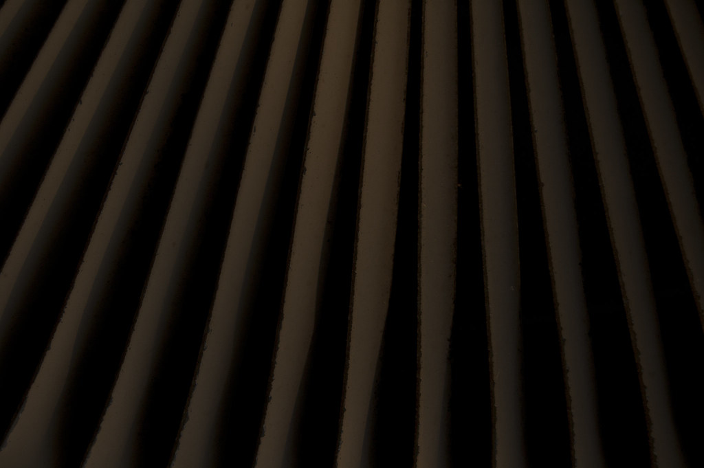
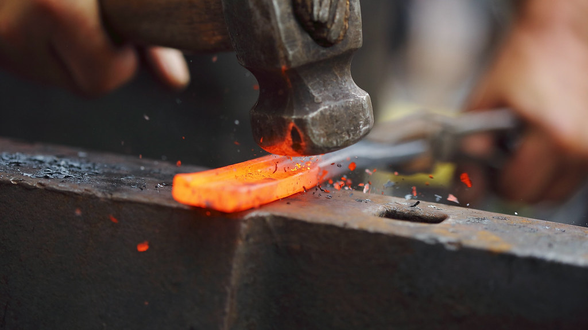

看板ブランド「FOR」
FACTORY FRONTの看板ブランド「FOR」。ステンレス製の名刺入れなど、燕の金属加工技術を暮らしの道具に落とし込んだ自社製品です。素材選びから仕上げまで、量販店の製品にはないこだわりを一つひとつに込めています。

新潟県燕市 — 金属加工の産地
新潟県燕市。金属加工の産地に立つセレクトショップ&体験工房、FACTORY FRONT。
〒959-1289 新潟県燕市東太田14-3
新潟県燕市は、金属洋食器や金属加工で知られるものづくりの産地です。FACTORY FRONTは、その燕から生まれた製品を紹介するセレクトショップ。量販店ではなかなか出会えない、作り手の素材へのこだわりや仕上げの丁寧さが息づく品々を取り揃えています。店頭では、スタッフが商品ひとつひとつの背景を丁寧にお伝えしながらご案内。地域と金属加工の歴史へのリスペクトを大切にしながら、初めての方にも燕のものづくりの魅力を身近に感じていただける場所でありたいと考えています。
FACTORY FRONTの看板ブランド「FOR」。ステンレス製の名刺入れなど、燕の金属加工技術を暮らしの道具に落とし込んだ自社製品です。素材選びから仕上げまで、量販店の製品にはないこだわりを一つひとつに込めています。
定番の生活雑貨から、思わず手に取りたくなる霧吹きのような小さな逸品まで、店主の目で選んだセレクト雑貨を取り揃えています。訪れるたびに新しい出会いがある、宝探しのような品揃えです。
着色にわずかなムラが出てしまった個体などを、あえて「1点物」としてご紹介するのもFACTORY FRONTらしさ。個体差を正直にお伝えしたうえで、その一点にしかない魅力としてお届けしています。
FACTORY FRONTでは、アクセサリー作りのワークショップを開催しています。所要時間は1時間ほど。ものづくりが初めての方でも、スタッフが一つひとつの工程を丁寧に説明しながらご案内しますので、安心してご参加いただけます。作業の合間には、燕の地域や金属加工の歴史についてのお話も。手を動かしながら、産地の背景まで感じていただける体験です。
体験のご予約はInstagramのDMから
FACTORY FRONTでは、期間限定のPOPUP出店や新商品の入荷など、店の“今”をInstagramで発信しています。店内の様子や最新情報はすべてこちらに集約していますので、ご来店前にはぜひチェックしてみてください。
Instagramをフォローするご来店のお客様
「FACTORY」という名前から想像していた雰囲気とは違い、おしゃれで整ったレイアウトの店内に驚きました。量販店ではなかなか見かけない製品が多く並んでいて、こだわりを感じます。看板製品の「FOR」を購入した際には、丁寧な説明もしていただきました。
ご来店のお客様
初めて伺いましたが、こだわりの詰まった素敵な店内で、店員さんも親切に説明してくださいました。気に入った霧吹きを購入。たまたま出店していたPOPUPのアイスも美味しかったです。
ご来店のお客様
Instagramでの発信に力を入れている印象で、店内はおしゃれで落ち着いた雰囲気でした。周辺の見どころについても親切に教えていただき、旅の予定にとても役立ちました。
ご来店のお客様
アクセサリー作りのワークショップに参加しました。初めてで戸惑う場面もありましたが、スタッフの方が優しく丁寧に教えてくださり、1時間ほどで満足のいく作品が完成。地域や金属加工の歴史についても解説いただき、作り手や地域へのリスペクトを感じるお店でした。
ご来店のお客様
「FOR」のステンレス名刺入れをアウトレット品として購入しました。着色にわずかなムラがあるとのことでしたが、むしろその色合いが好みで、1点物としての魅力を感じられる買い物になりました。
一部の写真はフリー素材のイメージです。実際の店内・商品の写真は貴店ご提供のものに差し替えます